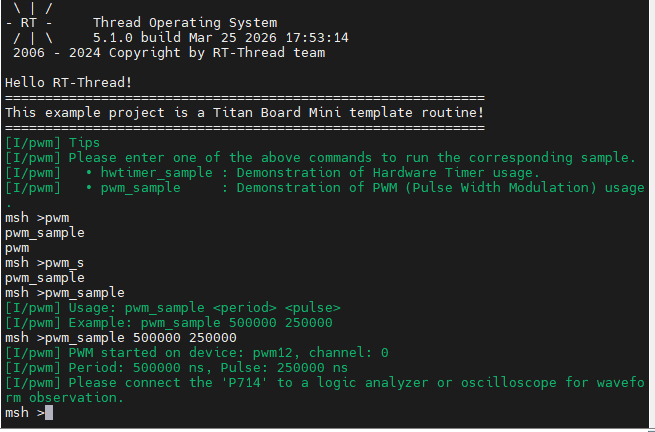

GPT Driver Example Guide
Chinese | English
Introduction
This example project demonstrates how to use the RT-Thread Timer Device Driver Framework on Titan Board Mini (based on RA8P1) to implement GPT (General PWM Timer) functionality.
Core Features
PWM Waveform Generation: Supports multiple PWM modes (square wave, triangle wave, etc.)
High-Precision Timing: 32-bit high-resolution counters
Multi-Channel Support: Simultaneously manage multiple timer channels
Input Capture: Measure external signal frequency and pulse width
Flexible Configuration: Supports multiple clock sources and operating modes
Real-Time Control: Microsecond-precision timing control
Technology Stack
Hardware Platform: Renesas RA8P1 (Cortex-M85 + Cortex-M33)
Operating System: RT-Thread Real-Time Operating System
Development Tool: RT-Thread Studio
Driver Framework: Renesas FSP (Flexible Software Package)
Hardware Introduction
1. RA8P1 Microcontroller Features
RA8P1 is Renesas’ high-performance 32-bit microcontroller designed for artificial intelligence and machine learning applications:
Core Specifications
CPU Architecture: Heterogeneous dual-core architecture
Cortex-M85: 1GHz main frequency, Helium™ vector extension
Cortex-M33: 250MHz main frequency, TrustZone security architecture
NPU Acceleration: Integrated Ethos™-55 NPU, 256 GOPS AI computing power
Memory Configuration: 2MB SRAM with ECC support
Clock System: Supports multiple clock sources, up to 1GHz
Timer Resources
GPT Timers: Multiple 32-bit general-purpose PWM timers
AGT Timers: Asynchronous 16-bit timers
Resolution: Up to 32-bit counter precision
Clock Sources: PCLK, external trigger, event link control
2. GPT Hardware Module Details
2.1 GPT Module Architecture
┌─────────────────────────────────────────────────────────┐
│ GPT Timer Module │
├─────────────────────────────────────────────────────────┤
│ Timer Control Unit │ PWM Compare Unit │
│ (Timer Control) │ (PWM Compare) │
│ │ │
│ Counter Logic │ Output Control │
│ (Counter Logic) │ (Output Control) │
│ │ │
│ Input Capture Unit │ Interrupt Controller │
│ (Input Capture) │ (Interrupt Ctrl) │
│ │ │
│ Clock Select Unit │ Filter │
│ (Clock Select) │ (Filter) │
└─────────────────────────────────────────────────────────┘
2.2 GPT Core Features
Operating Modes
Periodic Mode: Continuously output fixed-period pulses
One-Shot Mode: Output only one pulse then stop
PWM Mode: Generate PWM waveforms with variable duty cycle
Square Wave PWM
Saw Wave PWM
Triangle Wave PWM
Performance Specifications
Resolution: 32-bit counter (0-4,294,967,295)
Clock Frequency: Up to PCLKD/1 (PCLKD supports 100MHz+)
Output Precision: Nanosecond-level precision
Channel Count: Each GPT module supports multiple PWM channels
Hardware Interfaces
Output Pins: GTIOCA, GTIOCB (supports polarity control)
Input Pins: Supports external signal triggering and measurement
Event Link: Supports integration with ELC (Event Link Controller)
Filter Function: Supports input signal debouncing filtering
2.3 RA8P1 GPT Actual Configuration
Based on the current project configuration, the GPT configuration for Titan Board Mini is as follows:
Clock Configuration
Main Clock Source: PCLKD
Division Factor: Configurable (1-1024)
Frequency Range: Dynamically configured based on system clock
Pin Assignment
PWM Output: P714
Input Capture: Supports multiple GPIOs
Trigger Source: External signal or software trigger
Software Architecture
1. RT-Thread Device Framework
1.1 Device Hierarchy
┌─────────────────────────────────────────────────────────┐
│ RT-Thread Kernel │
├─────────────────────────────────────────────────────────┤
│ Device Management Layer │
│ ┌─────────────┐ ┌─────────────┐ ┌─────────────┐ │
│ │ PWM Device │ │ HWTIMER │ │ Other │ │
│ │ (pwm12) │ │ Device │ │ Devices │ │
│ └─────────────┘ └─────────────┘ └─────────────┘ │
├─────────────────────────────────────────────────────────┤
│ Driver Abstraction Layer │
│ ┌─────────────────────────────────────────────────────┐ │
│ │ GPT Driver Layer │ │
│ │ ┌─────────────┐ ┌─────────────┐ ┌─────────────┐ │ │
│ │ │ FSP Adapter │ │ PWM Control │ │ Interrupt │ │ │
│ │ │ (r_gpt) │ │ (rt_pwm) │ │ Handler │ │ │
│ │ └─────────────┘ └─────────────┘ └─────────────┘ │ │
│ └─────────────────────────────────────────────────────┘ │
├─────────────────────────────────────────────────────────┤
│ Hardware Abstraction Layer │
│ ┌─────────────────────────────────────────────────────┐ │
│ │ RA8P1 Hardware Interface │ │
│ │ ┌─────────────┐ ┌─────────────┐ ┌─────────────┐ │ │
│ │ │ GPT │ │ Interrupt │ │ GPIO │ │ │
│ │ │ Registers │ │ Controller │ │ Control │ │ │
│ │ │ Interface │ │ NVIC │ │ PORT │ │ │
│ │ └─────────────┘ └─────────────┘ └─────────────┘ │ │
│ └─────────────────────────────────────────────────────┘ │
└─────────────────────────────────────────────────────────┘
1.2 Core Interface Functions
Device Control Interface
// PWM device lookup
rt_device_pwm *rt_device_find(const char *name);
// PWM configuration setup
rt_err_t rt_pwm_set(rt_device_pwm *device, int channel,
rt_uint32_t period, rt_uint32_t pulse);
// PWM enable control
rt_err_t rt_pwm_enable(rt_device_pwm *device, int channel);
rt_err_t rt_pwm_disable(rt_device_pwm *device, int channel);
// HWTIMER interface
rt_err_t rt_device_find(const char *name);
rt_err_t rt_hwtimer_control(rt_device_t dev, int cmd, void *arg);
Interrupt Handler Interface
// GPT interrupt service routine
void timer1_callback(timer_callback_args_t *p_args);
// Interrupt configuration
void R_GPT_Open(gpt_instance_ctrl_t *p_ctrl, const timer_cfg_t *const p_cfg);
void R_GPT_Start(gpt_instance_ctrl_t *p_ctrl);
void R_GPT_Stop(gpt_instance_ctrl_t *p_ctrl);
2. Driver Architecture
2.1 Main Driver Files
project/Titan_Mini_driver_gpt/
├── src/hal_entry.c # Main program entry
├── ra/src/r_gpt/r_gpt.c # FSP GPT driver implementation
├── ra/inc/instances/r_gpt.h # GPT header file
├── ra_cfg/fsp_cfg/r_gpt_cfg.h # GPT configuration file
└── ra_gen/hal_data.h # Hardware abstraction layer
Usage Examples
Configuration Instructions
Running Effect Example
Enter pwm_sample 500000 250000 in the terminal to run the example

Then connect the P714 pin to an oscilloscope to see the effect, as shown below


If you have any questions or suggestions, please feel free to discuss them in the RT-Thread Official Forum.